Canal Cafe, 2025
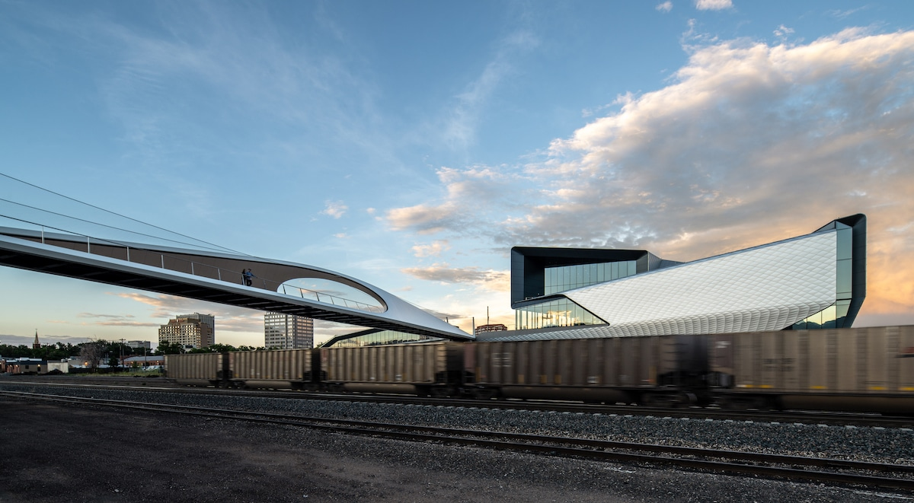
Park Union Bridge, 2021
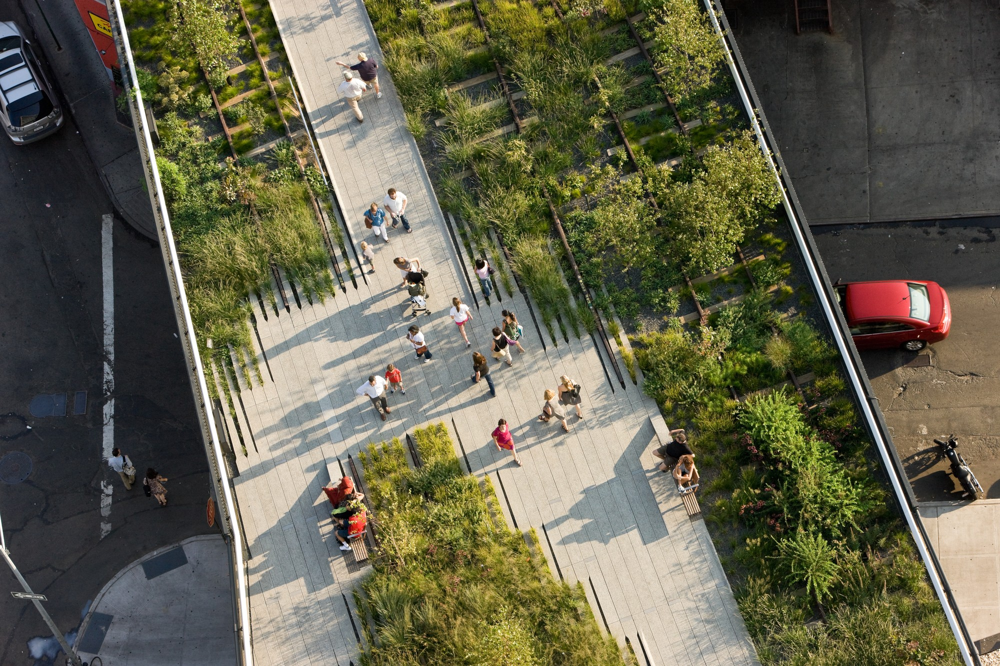
High Line, 2019
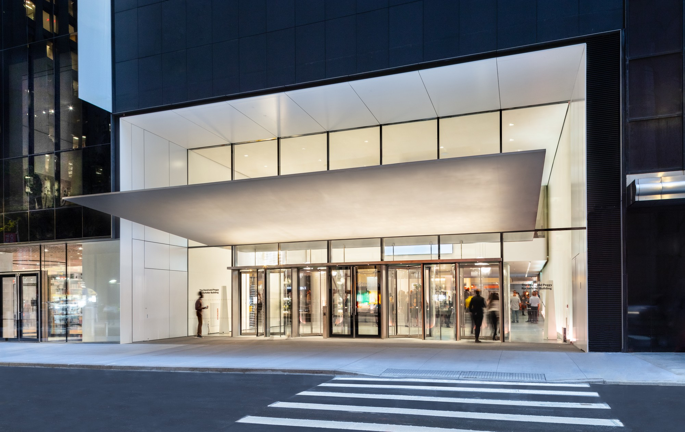
MoMA, 2019
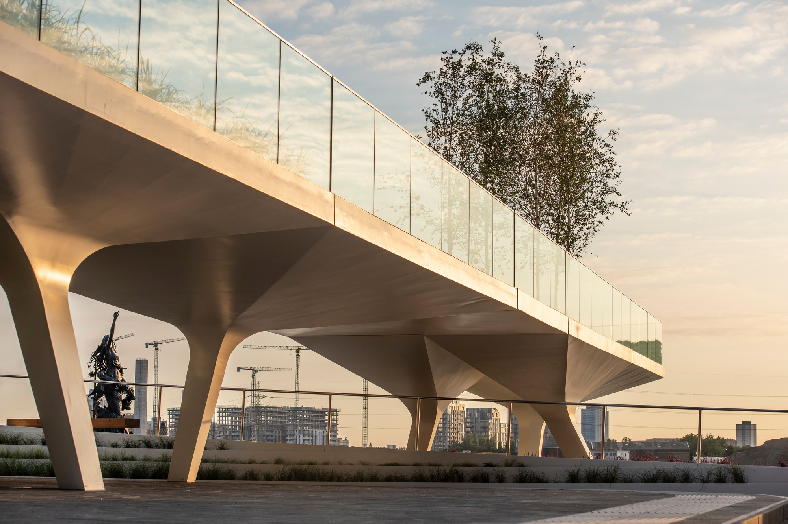
The Tide, 2019
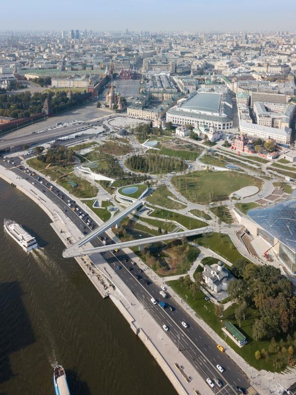
Zaryadye Park, 2017
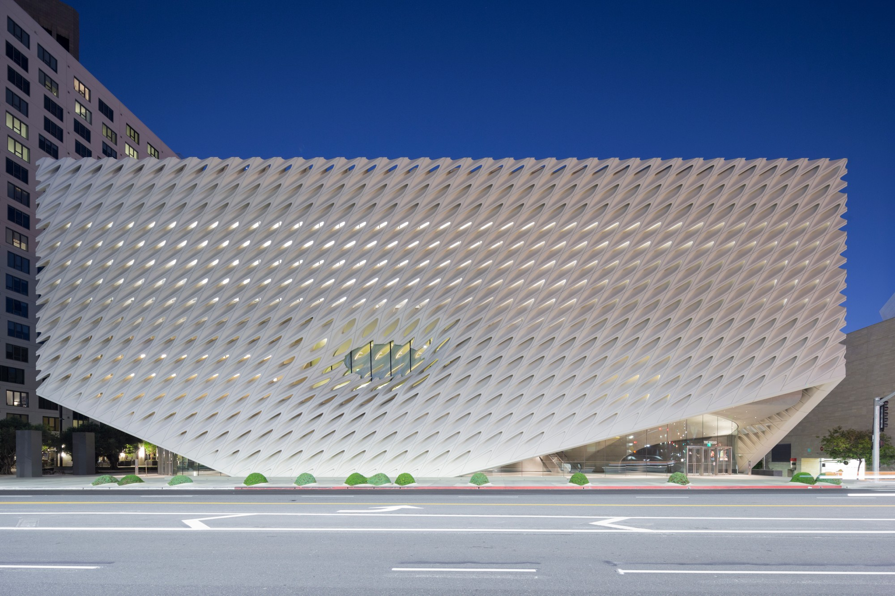
The Broad, 2015
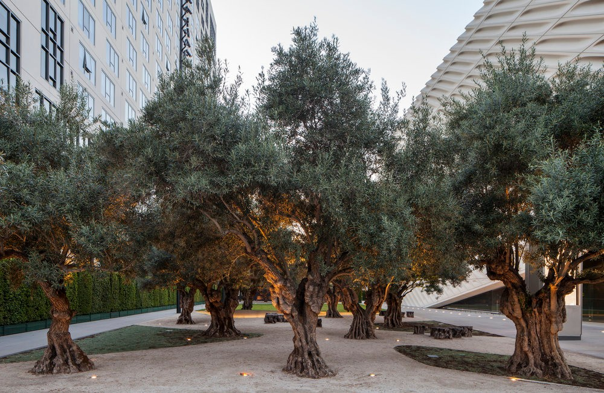
The Broad Plaza, 2015
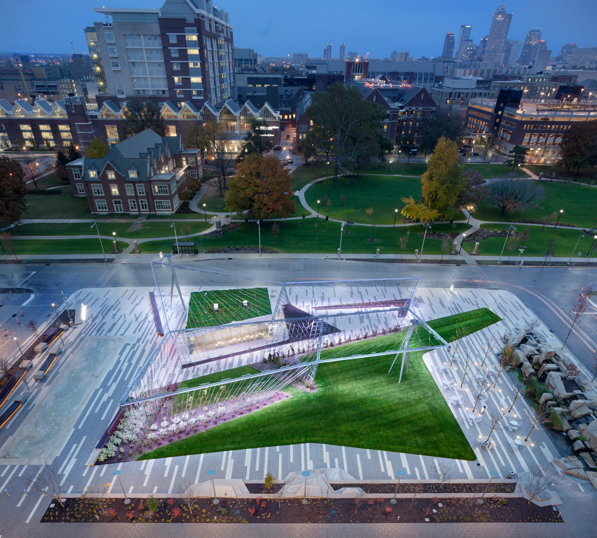
Wishard Pavilion, 2014
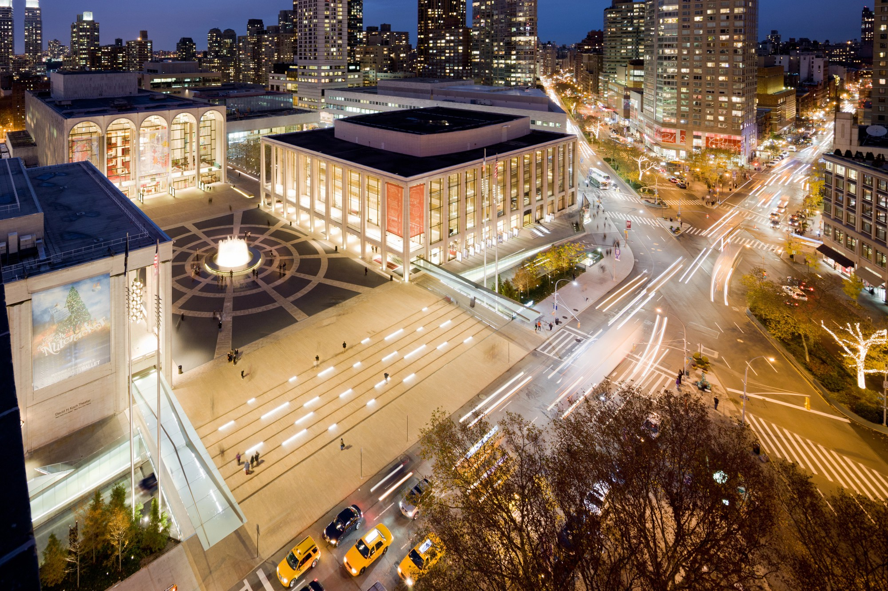
Lincoln Center for the Performing Arts, 2012
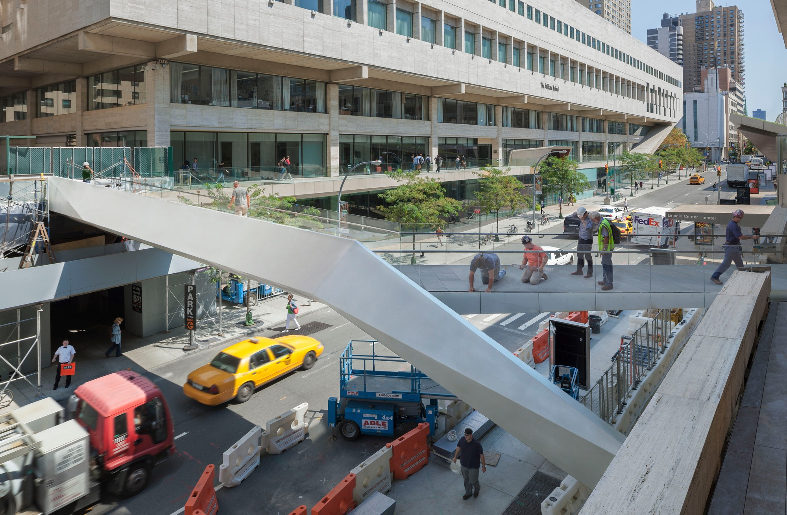
65th Street Bridge, 2012
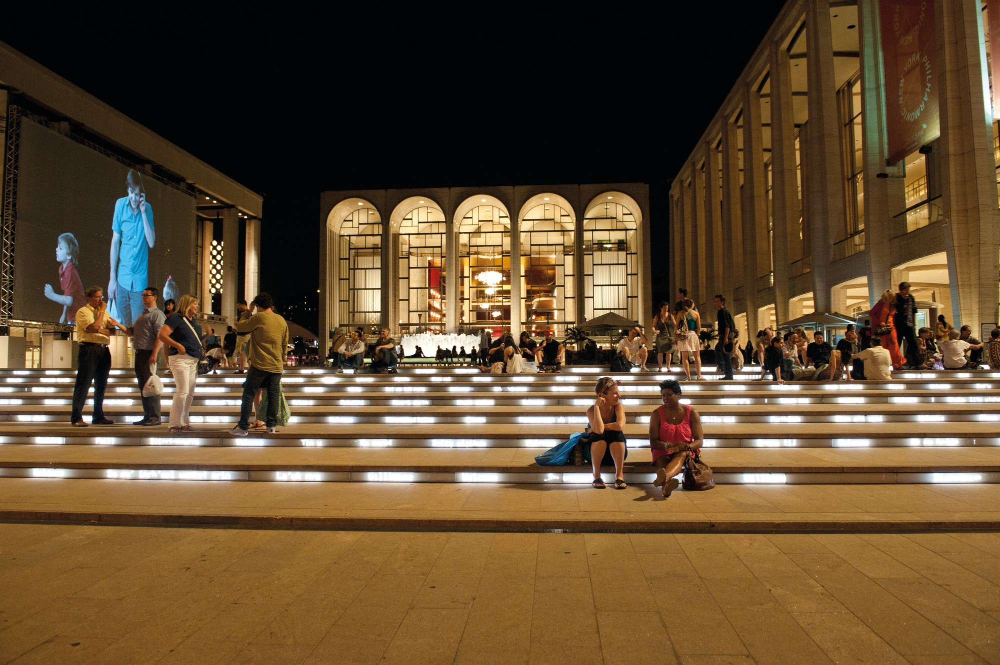
Lincoln Center Public Spaces, 2010
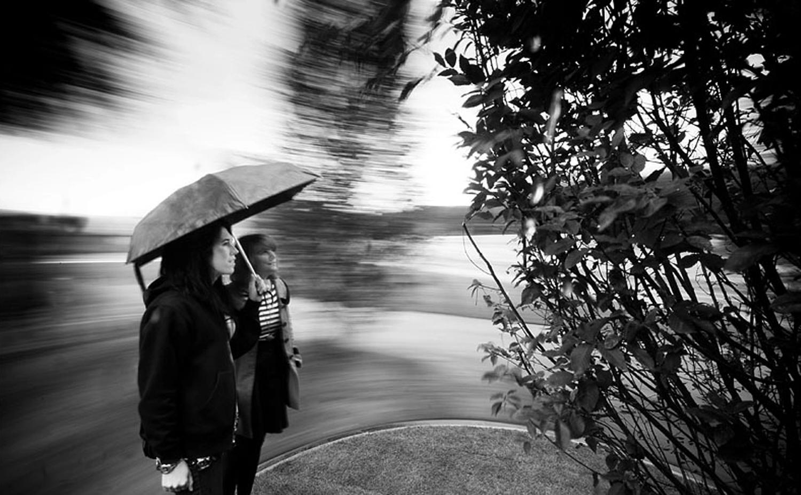
Arbores Laetae (Joyful Trees), 2008
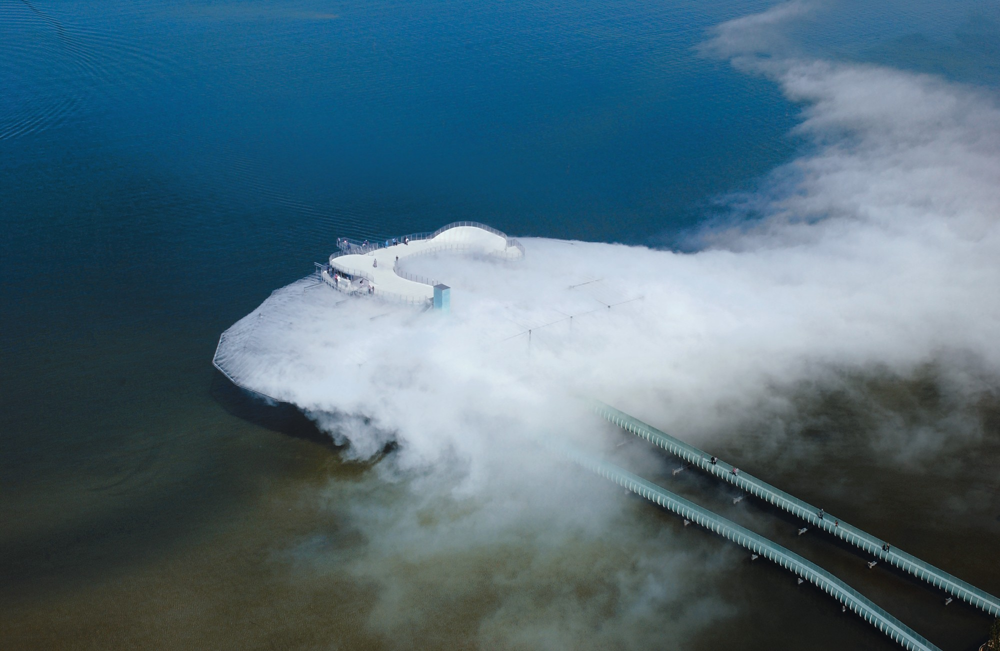
Blur Building, 2002
No projects match your search.